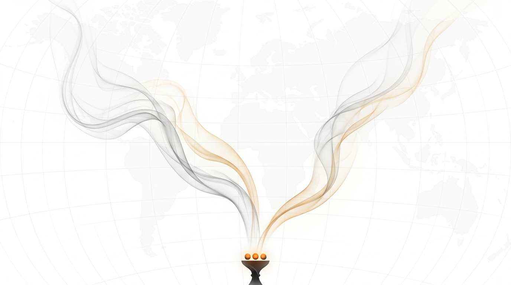
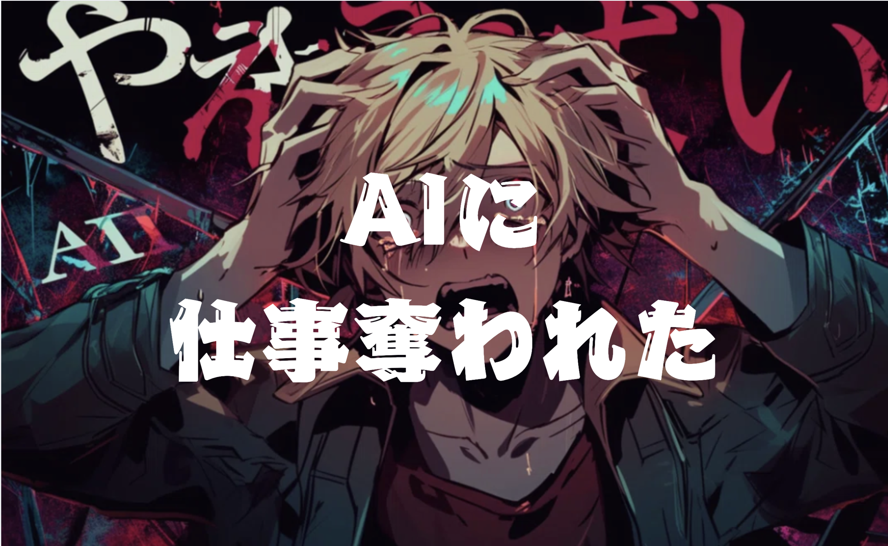
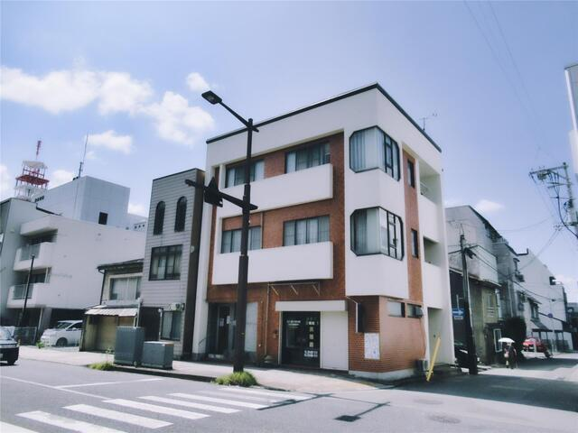
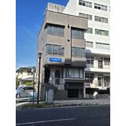
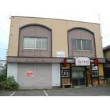

完全AI駆動の貸切シーシャ。岩手大学生向け。
物件探しから料金設計、このサイト自体まで、全部AIと一緒に作った。
全プロセスを公開する。

事業の構想・調査・意思決定のプロセスを、完成を待たずにリアルタイムで全公開する手法。失敗も数字も全部見せる。このページ自体がそのプロダクト。物件探しも料金設計も原価計算も、全部AIと一緒にやった過程がそのまま載っている。
東京でめっちゃシーシャ行ってた。でも岩手大学から盛岡大通りは遠い。既存のシーシャ店は全部繁華街にある。大学の近くにない。
じゃあ作る。岩手大学徒歩圏内に、完全AI駆動で貸切シーシャを。飲食は持ち込み。許認可も物件探しも料金設計も、全部AIと一緒にやる。そのプロセスを全公開する。Build in Public。
時定数がゼロに近づく世界で、同じ場所に集まって同じ空気を吸う体験の価値は上がる一方だと思っている。パーソナライゼーションが進むほど、「同じ空間で同じ時間を過ごす」こと自体が希少になる。まずはシーシャから。
東京で3年間AIと一緒に働いてきて、こいつの凄さを肌で知っている。物件探し、料金設計、原価計算、競合調査、法務確認、デザイン、このサイト自体——全部AIとの対話だけで作った。この過程を見せること自体が、AIが何をできるかのデモになる。盛岡の人にも、岩大の友達にも、「AIってこういうことができるんだ」を体感してほしい。

3年前にChatGPTがリリースされ、2,3年後にはAIに仕事奪われると焦って、休学、岩手を飛び出し、東京で戦ってたんですが、予想通り無事AIに仕事奪われた（解雑されたとかではないです）ので、大学に戻ってきました。
東京でも「数学勉強したい」「物理勉強したい」ってずっと言ってたので、本望。岩手でいっぱい勉強したいと思います。
東京で仲良くしてくれた人ありがとうございました。友達がみんな院進すると思ったら、安心して休学、挑戦できた。ありがたい。みんなはあと1年だけどまたよろしくお願いします。
予言して行動して的中させて帰ってきたやつ流石に説得力ある説
— @konaito_ · Instagram, 2026.3
シーシャだけ置いて、飲食は持ち込み。許認可・初期投資・ランニングコスト全部軽い。
飲食を出さないなら、実質「たばこ出張販売許可」だけでいける。ただし重大な落とし穴あり。
「持ち込みスタイルなら不要」と想定していたが、店内で飲食（持ち込み含む）させる営業を行う場合、飲食店営業許可が必要になるケースが圧倒的多数。「提供しないからOK」は通じない可能性が高い。
→ 今すぐ盛岡市保健所に匿名で電話確認すること
生活衛生課: 019-603-8311 / 健康増進課: 019-603-8305
ここがクリアできなければ全プランが変わる。他の全ステップより先にこれを確認せよ。
| 許可名 | 必要？ | 理由 |
|---|---|---|
| たばこ出張販売許可 | 必要 | シーシャ（たばこ）を提供する以上必須 |
| 喫煙目的施設の届出 | 必要 | 改正健康増進法により屋内喫煙するために必要 |
| 飲食店営業許可 | 要確認 | 持ち込みでも必要な可能性大。保健所に確認必須 |
| 深夜酒類提供届出 | 不要 | 酒を店が提供しないなら不要 |
| 防火管理者 | 規模次第 | 収容30人超の場合のみ |
CLOUD SHOPに頼めば無料で委託元になってくれる。登録免許税3,000円のみ。審査2〜3ヶ月。
| JT盛岡支店 | 盛岡市盛岡駅前通15-19 盛岡フコク生命ビル1F |
| JTお客様相談センター | 0120-198-504 |
「貸切4,000円」のキャッチは残しつつ、実態は利益が出る3プラン構成。
| 項目 | 料金 | 原価 |
|---|---|---|
| 延長 | 500円/30分 | — |
| アイスホース | 200円 | ~0円 |
| フレーバーMIX | 200円 | +50円 |
| トップ替え | 800円 | +300円 |
| デクラウド（ニコチンフリー） | +300円 | +100円 |
長期休暇の売上減を吸収する仕組み。20人加入で月10万の固定収入。
※ 飲食持ち込み自由・ゴミはお持ち帰り / 20歳未満の方はご入場いただけません
シーシャの原価率は15〜25%。飲食業で最も利益率が高い業態のひとつ。
| 項目 | 数量 | 単価 | 小計 |
|---|---|---|---|
| フレーバー | 10g | ~25円/g | 250円 |
| ココナッツ炭 | 6個 | ~12円/個 | 72円 |
| マウスピース | 1〜2個 | ~12円 | 18円 |
| その他消耗品 | — | — | 5円 |
| 合計 | ~345円 | ||
| シナリオ | 売上 | 原価 | 粗利 | 原価率 |
|---|---|---|---|---|
| ソロ（1人） | 2,200円 | 345円 | 1,855円 | 16% |
| デュオ（2人） | 3,200円 | 345円 | 2,855円 | 11% |
| グループ（3人・2台） | 5,000円 | 690円 | 4,310円 | 14% |
| パーティ（6人・4台） | 8,000円 | 1,380円 | 6,620円 | 17% |
満席率100%の理論値ではなく、現実的な稼働率で計算。
| 項目 | 通常月（9ヶ月） | 長期休暇（3ヶ月） |
|---|---|---|
| 平日売上 | 5,400円 × 14日 = 75,600円 | × 50% = 37,800円 |
| 週末売上 | 12,000円 × 8日 = 96,000円 | × 50% = 48,000円 |
| 月間売上 | 171,600円 | 85,800円 |
| 経費 | 104,500円 | 104,500円 |
| 月間利益 | 67,100円 | -18,700円 |
大阪のLAGOSは開業後の6〜9月に「1日の客が1人の日」を経験。あなたにも起きうる。
| 月間売上（稼働率30%） | 85,800円 |
| 経費 | 104,500円 |
| 月間赤字 | -18,700円/月 |
→ 運転資金36万を確保していれば最悪シナリオでも1年以上耐えられる。間借りテストをしていればこのリスク自体を事前に検知できる。
月利益6.7万円のビジネスは本業にはならない。バイト＋シーシャ屋の2本柱、または週3〜4日営業のスモールビジネスとして設計するのが堅実。それでも年間57〜177万円の副収入は大きい。
用途地域・岩手大学からの距離・家賃を総合評価。近隣商業地域の本町通が最有力。
| 物件 | 用途地域 | 岩大から | シーシャ店 | 深夜営業 |
|---|---|---|---|---|
| サニーフラット | 近隣商業 | 徒歩15分 | 制限なし | 可能 |
| 本町通 貸店舗 | 近隣商業 | 徒歩13〜19分 | 制限なし | 可能 |
| 藤田テナント | 住居専用（推定） | 徒歩3〜5分 | 500m²以下 | 不可 |
| 上田 飲食店可 | 住居専用（推定） | 徒歩3〜5分 | 500m²以下 | 不可 |
| 館向町 | 第一種住居 | 徒歩20〜30分 | 3,000m²以下 | 不可 |

盛岡市本町通2丁目3-30 / 28.98m² / 近隣商業地域 / 敷金0・礼金0・即入居可
用途地域の制限なし。初期費用ゼロが最大の魅力。「撤退のしやすさ」という最強の武器。

盛岡市本町通2丁目 / 64.80m² / 近隣商業地域
6万円で65m²は破格。広さを活かしてゆったりした貸切空間を作れる。

盛岡市上田2丁目 / 39.70m² / 第二種中高層住居専用地域（推定）
岩手大学から徒歩3〜5分。距離は最強だが住居専用地域のためリスクあり。
全店が中央通・内丸・菜園に集中。上田・本町エリアにはゼロ。
| 既存店（中央通） | BiPシーシャ | 差 | |
|---|---|---|---|
| 1人 | ~2,500円 | 2,200円 | 300円安い |
| 3人 | ~7,500円 | 5,000円 | 33%安い |
| 5人 | ~12,500円 | 6,000円 | 52%安い |
| 空間 | 他の客あり | 完全貸切 | — |
| 飲食 | 店のドリンク必須 | 持ち込みOK | — |
全国のシーシャ屋のリアルな体験談を調査。教訓をプラン全体に反映済み。
「シーシャのあるリビング」で12店舗まで急拡大。ピーク9.4億→競合増加で8.2億に低下→2026年3月破産。負債2.5億。
教訓: 急拡大は競争激化で致命傷。→ BiPシーシャは1店舗のスモールビジネス。この罠には落ちない。
経営不振ではなく「疲弊」で閉店。1人で3年3ヶ月休みなし。スタッフに任せると売上30%に暴落。
教訓: 属人経営は体力の限界で終わる。→ 週3〜4日の副業設計で回避。
初日38,500円→翌日10,500円に急落。パイプ10本しかなく客に提供不能。ソファが買えない。消費税を理解してなくて大打撃。
教訓: 運転資金は最低6ヶ月分。→ 初期投資とは別に36万を確保。
タコス×シーシャ。地方でニッチ×ニッチは成立しなかった。
教訓: 地方では1つのニッチに全振り。→ 「シーシャ×学生」に集中。余計な要素を足すな。
シーシャ歴22年のシノ氏。10席の完全予約制で常に予約困難。「神のシーシャ」で全国から愛好家が訪れる。
学び: 圧倒的品質があれば10席でもブランドになる。シーシャの作り方を死ぬほど練習しろ。
6〜9月はギリギリ黒字。1日の客が1人の日も。10月にようやく売上過去最高。Instagram動画が最高13,000再生。
学び: 最初の半年は地獄。運転資金と精神力がすべて。副業なら精神的にも耐えやすい。
| リスク | 内容 | BiPシーシャへの影響 |
|---|---|---|
| たばこ税増税 | 2027〜2029年に段階的に増税 | 中 — 原価率が低いので吸収可能 |
| 規制強化 | 厚労省が新型たばこ規制を議論中 | 中 — 将来対象になる可能性 |
| 市場飽和（都市部） | 東京はスタバ超え。淘汰フェーズ | 低 — 盛岡は4店のみ |
| CO中毒事故 | 5年半で64件。店舗の6割で症状経験 | 最大 — 事故=即廃業 |
ここだけはケチるな。シーシャ炭はCOを大量に発生させる。換気不足は一発で廃業 or 事故。
| 項目 | 必要スペック（30〜40m²） |
|---|---|
| 必要排気量 | 800〜1,200 m³/h 以上 |
| 換気回数 | 10〜15回/時間 |
| 入口風速 | 0.2m/s以上（法的基準） |
| パターン | 費用 | 備考 |
|---|---|---|
| 居抜き（ダクト既存） | 50〜100万円 | ← これを狙う |
| スケルトン（壁出し排気） | 80〜150万円 | 2026年の資材高騰込み |
| 地下物件 | 200万円〜 | 避けるべき |
5年半で64件のCO中毒事故。全国店舗の6割で症状経験あり。シーシャ1回で紙巻きタバコ4〜5本分のCOが発生。CO検知器は必ず2台以上設置。
「学生×貸切×持ち込み」は無法地帯化のリスクと隣り合わせ。
| リスク | 確率 | 対策 |
|---|---|---|
| 持ち込み酒による泥酔・嘔吐 | 確実 | 入店時の同意書。嘔吐クリーニング費5,000円を明記 |
| 炭の落下・台転倒による火災 | 確実 | 床を焦げにくい素材に。火災保険の借家人賠償責任特約 |
| 深夜の騒音→近隣通報 | 高確率 | 営業24時まで。防音対策。開業前に近隣全戸へ挨拶 |
| 20歳未満の入場 | 高確率 | 入店時に全員の身分証確認。1人でも未成年→全員不可 |
| 貸切モデルの回転率の壁 | 構造的 | 完全貸切は3人以上に限定。ソロ・デュオは相席あり |
「シーシャを吸う場所」ではなく「シーシャがあるリビング」として売る。
スマブラ・Netflix環境。滞在時間を伸ばし延長料金を積み上げる。コスト: 6〜8万円。
平日昼はシーシャなしの勉強スペースとして開放。2時間500円。認知度UP→夜のシーシャへ。
サークル打ち上げ・誕生日会パッケージ。「10人3時間12,000円」で長期休暇前の需要を取る。
最初のターゲットは岩大の軽音部・美術部・写真部。「1人1,667円」の衝撃を体験させれば、サークル内→学部→学年と口コミが広がる。Instagram / TikTokで「岩大生限定・5人1,667円貸切持ち込みシーシャ」を爆推し。
| オーナーの不安 | 対策 |
|---|---|
| 火災リスク | 防火シート+消火器+炭火対応火災保険の証書を見せる |
| 煙・臭い汚損 | 換気設備の設計図を提示+退去時クロス全面張替えを自己負担と提案 |
| 近隣苦情 | 排気口の位置計画+開業前の近隣挨拶を約束 |
| 項目 | 費用 | 備考 |
|---|---|---|
| 敷金・保証金 | 0〜20万円 | サニーフラットなら0円 |
| 仲介手数料 | 5〜7万円 | |
| 換気設備 | 50〜100万円 | 80万覚悟。2026年の資材高騰込み |
| シーシャ台 × 5台 | 15〜25万円 | |
| ソファ・テーブル | 10〜20万円 | |
| プロジェクター + Switch | 6〜8万円 | |
| 炭・フレーバー初期仕入 | 5〜10万円 | |
| CO検知器・消火器・床材・火災保険 | 5〜10万円 | |
| 運転資金（6ヶ月分） | 36万円 | ばんびえん・LAGOSの教訓 |
| 合計 | 130〜240万円 | 居抜き+敷礼ゼロで150万前後が現実的 |
出張販売許可は審査に2〜3ヶ月。物件探しと並行して今すぐ動く。
いきなり物件を借りるのではなく、まず盛岡のバーやカフェで週1〜2日間借りしてテストマーケティングする。初期投資は15〜20万円だけ。失敗しても致命傷にならない。
「持ち込み飲食のみのシーシャ店に飲食店営業許可は必要か？」を確認。ここがNGなら全プランが変わる。
019-603-8311 / 019-603-8305
出張販売許可の無料申請を依頼。審査2〜3ヶ月。保健所確認と並行。
shop.cloud-jp.net
間借りルート: バー・カフェに「週1〜2日シーシャイベント」を交渉。
物件ルート: サニーフラット・本町通貸店舗を内見。
「喫煙OK・ダクト工事OKの小規模テナント」で相談。ネットに出ない物件がある。
019-629-3010
KIMETが証明した通り、味が全て。盛岡の既存店に通って研究。最低100回は作ってからテスト営業に臨め。
間借り or 物件で営業開始。客数・リピート率・客単価のデータを取る。軽音部・美術部・写真部を直撃。
3ヶ月のデータでスケール or ピボット or 撤退を判断。間借りなら撤退コストはほぼゼロ。
データが良ければ物件を正式契約。換気工事、内装。
喫煙目的施設の届出。テスト期間の常連にサブスクを案内。
今日: 盛岡市保健所に電話 + CLOUD SHOPに連絡 + 間借り先探し
1〜2週間後: 間借り交渉 or 内見 + 用途地域確認
1ヶ月後: テスト営業開始（シーシャ台3台で小さく）
2〜3ヶ月後: 出張販売許可おりる + データ蓄積
4ヶ月後: データに基づきスケール判断
5〜6ヶ月後: グランドオープン
副業としては超アリ。低投資・高マージン・ブルーオーシャン。
| 項目 | 評価 | コメント |
|---|---|---|
| コンセプト | ◎ | 貸切×持ち込み×大学至近は既存店が手を出せないポジション |
| 料金設計 | ◎ | 3プラン+サブスクで健全な利益構造 |
| 原価構造 | ◎ | 原価率11-17%は飲食業最高水準 |
| ターゲット市場 | ○ | ニッチだが刺さる。20歳未満NGで市場が縮小 |
| 法務・許認可 | △ | 飲食許可の要否が未確定。保健所確認が最優先 |
| 運営リスク | △ | 火災・泥酔・騒音。ハード面の防御が必須 |
| 収益性 | ○ | 年間57〜177万。副業として優秀 |
「勝算はあるが、運用で詰むリスクも高い」。全国では年間40店が閉店し、チルイン（12店舗・売上9.4億）すら破産した。しかしBiPシーシャは彼らとは構造が違う：
今日やること: 盛岡市保健所に電話1本。クリアしたら間借りで1回イベントを打て。岩大の軽音・美術部に声をかけて、「1人1,667円」が刺さるかの肌感覚を掴むのが先決。